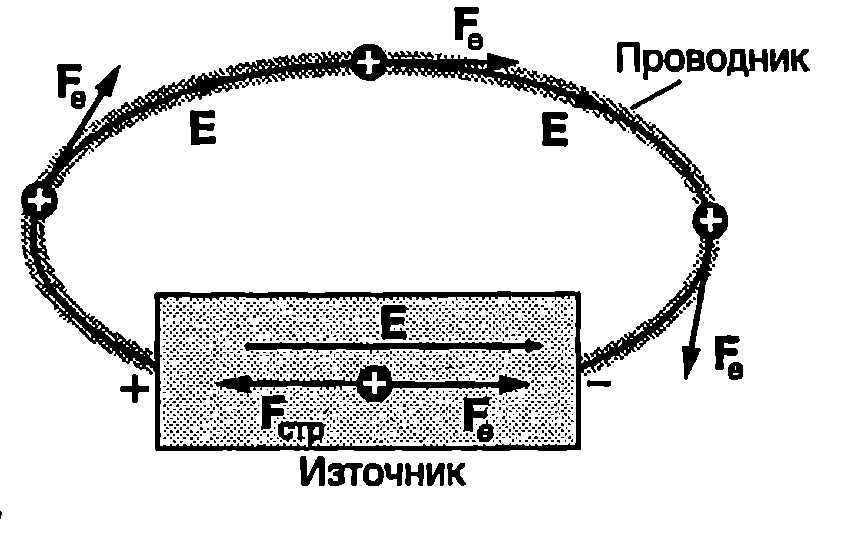
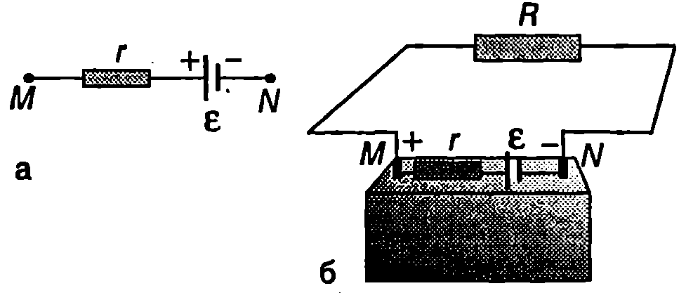
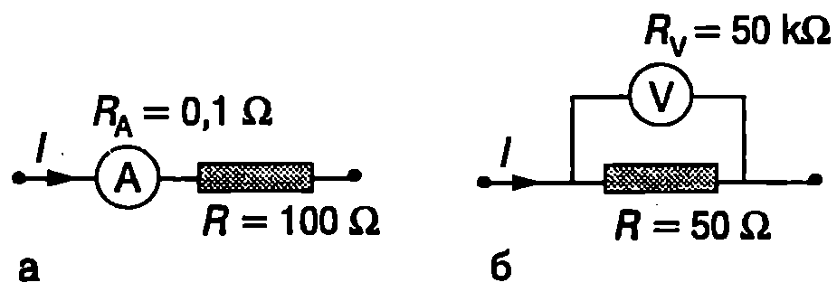
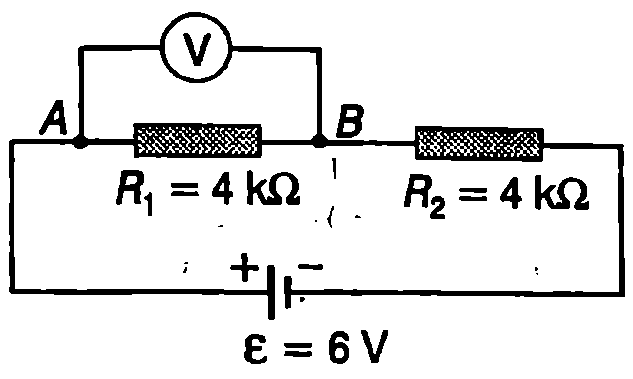
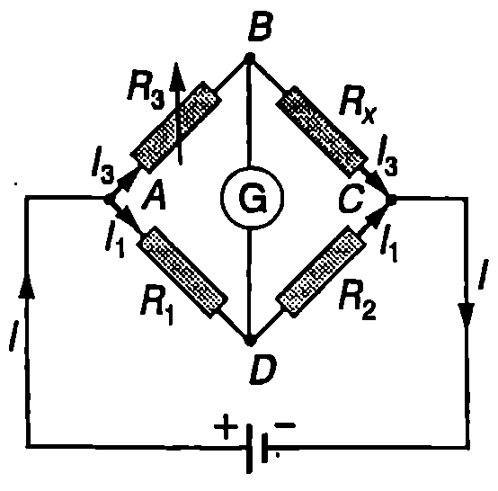
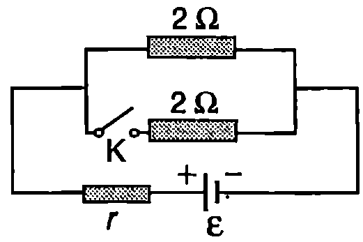

За поддържането на тока в затворена електрическа верига е необходим източник, който да преобразува някакъв друг вид енергия в електрична енергия. Сухите елементи (батерии) и акумулаторите преобразуват химичната енергия, генераторите механичната енергия, а слънчевите батерии светлинната енергия. Ще се спрем по-подробно на основните характеристики на източниците на електричен ток и ще обобщим закона на Ом за затворена електрическа верига.
Електродвижещо напрежение
На Фиг. \ref{fig:59.1} схематично е показана електрическа верига, съставена от източник и еднороден проводник. Когато положителен заряд премине от положителния до отрицателния полюс на източника по външната част на веригата, електричните сили на полето са насочени по посока на движението и извършват положителна работа, при което електричната потенциална енергия се превръща във вътрешна енергия: проводникът се загрява. За да се поддържа токът във веригата, след като достигне до отрицателния полюс на източника, зарядът трябва да се прехвърли отново на положителния полюс. Вътре в източника обаче електричните сили имат противоположна посока те се противопоставят на преминаването на заряда през източника. Затова поддържането на тока във веригата е възможно само ако вътре в източника на електричните заряди действат допълнителни сили , чиято посока е противоположна на посоката на електричните сили (Фиг. \ref{fig:59.1}). Прието е тези сили да се наричат странични сили.

`Фиг. 59.1`
Природата на страничните сили може да е различна. Например в батериите и акумулаторите това са сили, възникващи при химични реакции.
При пренасянето на електричния заряд вътре в източника страничните сили извършват положителна работа и възстановяват електричната потенциална енергия, която е имал зарядът преди да премине през проводника (Фиг. \ref{fig:59.1}).
Отношението на работата на страничните сили за пренасяне на положителен заряд от отрицателния до положителния полюс вътре в източника към големината на този заряд се нарича електродвижещо напрежение (ЕДН) на източника:
Единицата за ЕДН е волт (V). Електродвижещото напрежение е ако при пренасяне през източника на заряд 1C страничните сили извършват работа 1 J.
Вътрешно съпротивление на източник
Ако свържем лампа за джобно фенерче към батерия, ще установим, че се нагрява не само лампата, но и батерията. При протичане на електричен ток в затворена верига количество топлина се отделя както в консуматорите, така и в самите източници. Това показва, че източниците също имат електрично съпротивление, което се нарича вътрешно съпротивление на източника и се бележи с . За генератора е съпротивлението на неговата намотка, а за батериите и акумулаторите съпротивлението на химичните смеси или на електролитите, запълващи пространството между двата електрода. На електрическите схеми вътрешното съпротивление се представя като допълнителен резистор , свързан последователно на източника (Фиг. \ref{fig:59.2}а).

`Фиг. 59.2`
Свежите батерии, с които се захранва транзисторният радиоприемник или дистанционното управление на телевизора, имат малко вътрешно съпротивление (части от ома). Когато батерията старее и се изтощава, вътрешното и съпротивление нараства до няколко ома. Акумулаторите имат по-малко вътрешно съпротивление от батериите (0,001 — 0,1 ).
Закон на Ом за цялата верига
На Фиг. \ref{fig:59.2}б е показана затворена електрическа верига, съставена от източник с ЕДН и вътрешно съпротивление и от резистор със съпротивление . Съпротивлението на проводниците, свързващи резистора с полюсите на източника, е много малко и може да се пренебрегне. Веригата се разделя на две части: външна част - в случая това са резисторът и съединителните проводници, и вътрешна част източникът с неговото електродвижещо напрежение и вътрешно съпротивление. На Фиг. \ref{fig:59.2}б точките М и N (двата полюса на източника) свързват външната и вътрешната част от веригата. Ако за време през напречното сечение на проводниците преминава заряд , същият заряд преминава и през източника, при което страничните сили извършват работа
където зарядът е представен чрез тока във веригата: .
При протичането на тока във външната и вътрешната част на веригата се отделя количество топлина, което се определя от закона на Джаул-Ленц
Съгласно със закона за запазване на енергията . Приравняват се десните страни на равенства \eqref{eq:59.2} и \eqref{eq:59.3}, съкращава се на и се получава
Произведението от големината на тока и съпротивлението на определена част от веригата се нарича пад на напрежението върху тази част от веригата. Уравнение \eqref{eq:59.4} показва, че сумата от падовете на напрежението върху външната част () и вътрешната част () от затворена електрическа верига е равна на ЕДН на източника, свързан във веригата.
Уравнение \eqref{eq:59.4} може да се запише във вида
Тази зависимост се нарича закон на Ом за цялата верига: Токът в една електрическа верига е равен на отношението на електродвижещото напрежение на източника към пълното съпротивление на веригата.
Пример 59.1
Колко е максималният ток, който може да се черпи от акумулатор с ЕДН и вътрешно съпротивление ? \end{psexample}
Решение
От закона на Ом за цялата верига следва, че токът е максимален при , т.е. когато двата полюса на акумулатора се свържат с проводник с пренебрежимо малко съпротивление. Казваме, че във веригата е станало късо съединение. Токът при късо съединение се определя от вътрешното съпротивление на източника: При късо съединение източникът може да се повреди, а съединителните проводници да се разтопят.
Пример 59.2
Консуматор със съпротивление е свързан към източник с ЕДН и вътрешно съпротивление (Фиг. \ref{fig:59.2}б). Докажете, че мощността на тока през консуматора е максимална при . \end{psexample}
Решение
Мощността на тока през консуматора е . Изразяваме тока от закона на Ом за цялата верига и получаваме За да определим максимума на функцията , намираме нейната първа производна и я приравняваме на нула: откъдето получаваме, че мощността е максимална при .
**Електроизмервателни уреди **
Електричният ток се измерва с амперметър, напрежението с волтметър, а съпротивлението с омметър. Амперметърът винаги се свързва последователно в електрическата верига, а волтметърът се свързва успоредно към тази част от веригата, чието напрежение ще се измерва. Амперметрите имат малко съпротивление, а волтметрите голямо. В редица случаи съпротивлението на амперметъра е много по-малко от съпротивлението на резисторите, към които той е свързан последователно (Фиг. \ref{fig:59.3}а). Тогава то може да се пренебрегне. Амперметър с пренебрежимо малко съпротивление, чието свързване в дадена електрическа верига не оказва влияние на токовете, които текат във веригата, се нарича идеален амперметър. Съпротивлението на идеалния Волтметър е много по-голямо от съпротивлението на участъка от веригата, успоредно на който е свързан волтметърът (Фиг. \ref{fig:59.3}б). Идеалният волтметър не променя напрежението върху дадения участък от веригата. Бихме могли още да кажем, че идеалният амперметър има нулево съпротивление, а съпротивлението на идеалния волтметър е безкрайно голямо. При решаване на задачи, в зависимост от конкретните данни, трябва да преценим дали може да разглеждаме амперметрите и волтметрите като идеални, или трябва да отчетем тяхното съпротивление.

`Фиг. 59.3`
Пример 59.3
Колко е напрежението, което измерва волтметърът в електрическата верига, показана на Фиг. \ref{fig:59.4}? Разгледайте три случая:
а) волтметърът е идеален;
б) съпротивлението на волтметъра е ;
в) .
Вътрешното съпротивление на източника се пренебрегва. \end{psexample}
Решение
а) Идеалният волтметър има безкрайно голямо съпротивление, поради което включването му успоредно на резистора не променя съпротивлението между точките и от веригата.

`Фиг. 59.4`
Тъй като двата последователно свързани резистора имат еднакво съпротивление, напрежението върху тях също в еднакво: Следователно, идеалният волтметър ще измерва напрежение .
б) Разглеждаме волтметъра като резистор със съпротивление , който е свързан успоредно на . Еквивалентното съпротивление на двата резистора е: Общото съпротивление на веригата е: Токът във веригата е: Напрежението между точките и , т.е. напрежението, което показва волтметърът, определяме от закона на Ом: в) По същия начин пресмятаме еквивалентното съпротивление между точките и . За показанието на волтметъра получаваме: Следователно волтметърът със съпротивление може да се смята за идеален, докато включването на другия волтметър води до съществени изменения на напреженията и тока в дадената верига. Съвременните цифрови волтметри имат съпротивление около и в повечето случаи могат да се смятат за идеални. Стрелковите волтметри имат съпротивление от порядъка на няколко хиляди или няколко десетки хиляди ома (съпротивлението намалява при превключване на волтметъра на по-малък обхват). Това трябва да се има предвид при работа с такива уреди.
\begin{psexample}[label=ex:59.4]{Уитстънов мост}{} Една от най-разпространените схеми за измерване на неизвестно съпротивление е Уитстъновият мост (Фиг. \ref{fig:59.5}). Съпротивленията и са известни с голяма точност. Съпротивлението може да се изменя, и големината му се подбира така, че токът през галванометъра (чувствителен амперметър) да стане равен на нула. Определете неизвестното съпротивление , ако и . Токът през галванометъра става равен на нула при . \end{psexample}

`Фиг. 59.5`
Решение
Падовете на напреженията върху резисторите и са равни на разликата в потенциалите съответно на точки и и на точки и : Когато мостът е уравновесен, т.е. когато през галванометъра не тече ток, потенциалите на точки и са равни: . Следователно тогава . По аналогичен начин установяваме, че . При уравновесен мост през резисторите и тече един и същ ток , а през резисторите и тече ток . От закона на Ом и от горните две равенства между напреженията следват съотношенията: Разделяме почленно левите и десните страни на двете уравнения, съкращаваме токовете и , и определяме неизвестното съпротивление : Задачи
-
Слънчева батерия има ЕДН V. Колко е вътрешното съпротивление на батерията, ако при късо съединение през нея протича ток A?
-
Към батерия с ЕДН V е свързан резистор със съпротивление . Колко е вътрешното съпротивление на батерията, ако токът през резистора е A?
-
При включване на стартера от автомобилен акумулатор с ЕДН V се черпи ток A и напрежението във външната част на веригата пада до V. Колко е вътрешното съпротивление на акумулатора?
-
Към батерия с ЕДН V е включена крушка със съпротивление , която консумира мощност W. Начертайте схема на електрическата верига и определете: а) тока във веригата; б) вътрешното съпротивление на батерията.
-
Два консуматора със съпротивление и са свързани последователно към източник с ЕДН V и вътрешно съпротивление . Начертайте схема на електрическата верига и определете мощността на тока през всеки консуматор.
-
При отворен ключ (Фиг. \ref{fig:59.6}) от източника се черпи ток A. След затваряне на ключа токът през източника става A. Определете вътрешното съпротивление и ЕДН на източника.

`Фиг. 59.6`
7. Капацитет на акумулатор се нарича зарядът , който преминава през веригата при разреждането на акумулатора. Ако времето на разреждане е , а токът е , то капацитетът на акумулатора е и се измерва в амперчасове (). Автомобилен акумулатор с има капацитет . Колко часа акумулаторът може да захранва двете лампи на фаровете на автомобила, всяка от които има мощност ?
-
Определете ЕДН и вътрешното съпротивление на акумулатор, ако при ток мощността на тока във външната част от веригата е , а при съпротивление на външната част от веригата мощността на тока в нея е .
-
Определете вътрешното съпротивление на автомобилен акумулатор с ЕДН . Известно е, че при включване на стартера от акумулатора се черпи ток и напрежението във външната част от веригата (между клемите на акумулатора) става .
-
Определете максималната мощност, която може да се черпи от батерия с ЕДН и вътрешно съпротивление .